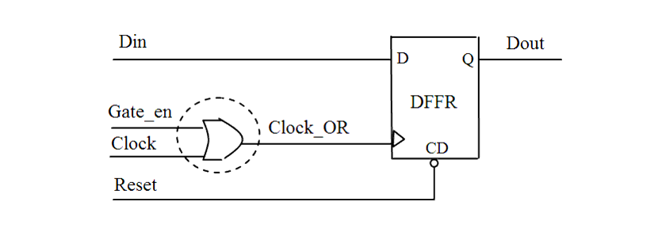

| Description | Leda flags this rule when there is an OR gate in the clock path, thus a gated clock is generated in the design. Arguments%s: the hierarchy name of the gate output. The following are the rule parameters for this rule:NEED_MORE_INFO: If this parameter is set to 1, this rule will report flip-flops driven by the gate and the input signals. This parameter's default value is 0.ONLY_CHECK_2X1_OR_GATES: If this parameter is set to 1, this rule only checks the 2x1 OR gates on the clock path, else this rule only checks all OR gates. This parameter's default value is 0.REPORT_GATED_CLOCK_IN_COMPLEX_CELL: If this parameter is set to 0, this rule will not report the OR gated clock in complex cell, else it will report. This parameter's default value is 1. |
| Policy | Design |
| Ruleset | Clock |
| Language | Verilog/VHDL |
| Type | Netlist |
| Severity | Error |
The following examples illustrates the rule:
module top(Y1,Y2,Y3,D1,D2,D3,D4,T,EN,EN2,EN3); input D1,D2,D3,D4,T,EN,EN2,EN3; output Y1,Y2,Y3; DFF I1(.Q(Y1), .DATA(D1), .CLK(I4_Y)); DFF I2(.Q(Y2), .DATA(D2), .CLK(I5_Y)); DFF I3(.Q(Y3), .DATA(D3), .CLK(T)); OR2 I4(.Y(I4_Y),.A(EN),.B(T)); OR3 I5(.Y(I5_Y),.A(EN2),.B(T),.C(D4)); endmoduleConfiguration:
rule_deselect -all rule_select -rule NTL_CLK10Violations:
9: OR2 I4(.Y(I4_Y),.A(EN),.B(T));
^
doc.v:9: CLOCKS> [ERROR] NTL_CLK10: Clock signal gated with an OR gate
top.I4.~bor0
--- The OR gate top.I4.Y (file: doc.v, line: 9)
10: OR3 I5(.Y(I5_Y),.A(EN2),.B(T),.C(D4));
^
doc.v:10: CLOCKS> [ERROR] NTL_CLK10: Clock signal gated with an OR gate
top.I5.~bor0
--- The OR gate top.I5.Y (file: doc.v, line: 10)
Configuration:
rule_deselect -all
rule_select -rule NTL_CLK10
rule_set_parameter -rule NTL_CLK10 -parameter NEED_MORE_INFO -value {1}
rule_set_parameter -rule NTL_CLK10 -parameter ONLY_CHECK_2X1_AND_GATES
-value {1}
Violations:
9: OR2 I4(.Y(I4_Y),.A(EN),.B(T));
^
doc.v:9: CLOCKS> [ERROR] NTL_CLK10: Clock signal gated with an OR gate
top.I4.~bor0
--- 1 flip-flops/latches are driven by the OR gate top.I4.Y (file:
doc.v, line: 9)
--- Clock input signal is: top.I4.B (file: doc.v, line: 9)
--- Enable input signal is: top.I4.A (file: doc.v, line: 9)
Configuration:
rule_deselect -all
rule_select -rule NTL_CLK10
rule_set_parameter -rule NTL_CLK10 -parameter NEED_MORE_INFO -value {1}
Violations:
9: OR2 I4(.Y(I4_Y),.A(EN),.B(T));
^
doc.v:9: CLOCKS> [ERROR] NTL_CLK10: Clock signal gated with an OR gate
top.I4.~bor0
--- 1 flip-flops/latches are driven by the OR gate top.I4.Y (file:
doc.v, line: 9)
--- Clock input signal is: top.I4.B (file: doc.v, line: 9)
--- Enable input signal is: top.I4.A (file: doc.v, line: 9)
10: OR3 I5(.Y(I5_Y),.A(EN2),.B(T),.C(D4));
^
doc.v:10: CLOCKS> [ERROR] NTL_CLK10: Clock signal gated with an OR gate
top.I5.~bor0
--- 1 flip-flops/latches are driven by the OR gate top.I5.Y (file:
doc.v, line: 10)
--- Clock input signal is: top.I5.B (file: doc.v, line: 10)
--- Enable input signal is: top.I5.C (file: doc.v, line: 10)
--- Enable input signal is: top.I5.A (file: doc.v, line: 10)
module top(Y1,Y2,Y3,D1,D2,D3,T1,T2,EN); input D1,D2,D3,T1,T2,EN; output Y1,Y2,Y3; DFF I1(.Q(Y1), .DATA(D1), .CLK(I4_Y)); DFF I2(.Q(Y2), .DATA(D2), .CLK(T2)); DFF I3(.Q(Y3), .DATA(D3), .CLK(T1)); ON21 I4(.YB(I4_Y),.A0(T2), .A1(T1), .B(EN)); endmoduleConfiguration:
rule_deselect -all
rule_select -rule NTL_CLK10
rule_set_parameter -rule NTL_CLK10 -parameter NEED_MORE_INFO -value {1}
Violations:
9: ON21 I4(.YB(I4_Y),.A0(T2), .A1(T1), .B(EN));
^
doc2.v:9: CLOCKS> [ERROR] NTL_CLK10: Clock signal gated with an OR gate
top.I4.~bor1
--- 1 flip-flops/latches are driven by the OR gate top.I4.~iw0
(file: doc2.v, line: 9)
--- Clock input signal is: top.I4.A0 (file: doc2.v, line: 9)
--- Enable input signal is: top.I4.B (file: doc2.v, line: 9)
Configuration:
rule_deselect -all
rule_select -rule NTL_CLK10
rule_set_parameter -rule NTL_CLK10 -parameter NEED_MORE_INFO -value {1}
rule_set_parameter -rule NTL_CLK10 -parameter
REPORT_GATED_CLOCK_IN_COMPLEX_CELL -value {0}
Violations:None.
Secondary messages - Number of secondary messages
.
Secondary message
%d flip-flops/latches are driven by the gate %s
Arguments ofmessage (if any)
%d: the number of flip-flops/latches driven by this gate%s: the hierarchy name of gate
Secondary message
Clock input signal is: %s
Arguments ofmessage (if any)
%s: the hierarchy name of clock signal
Source position
The position of the clock signal
Secondary message
Enable input signal is: %s
Arguments ofmessage (if any)
%s: the hierarchy name of enable signal
Source position
The position of the enable signal
